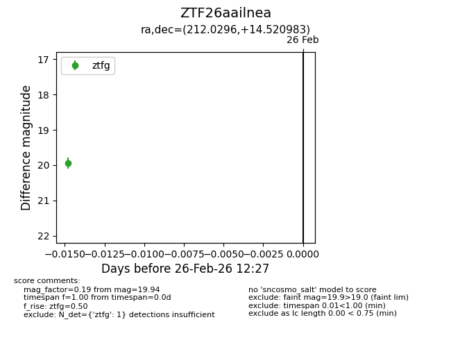
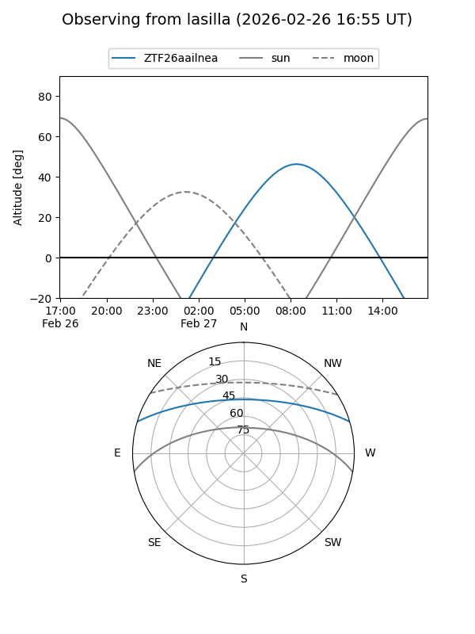
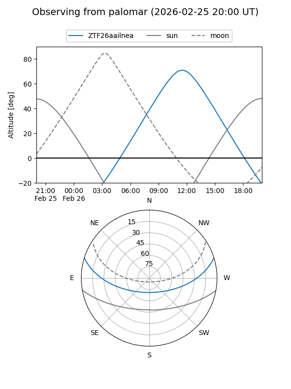

ZTF26aailnea
Target ZTF26aailnea at 2026-02-26 12:28
Aliases and brokers:
FINK: link
Lasair: link
ALeRCE: link
alt names
ZTF26aailnea (ztf,fink_ztf)
Coordinates:
equatorial (ra, dec) = 212.0296,+14.52098
equatorial (HMS+DMS) = 14:08:07.11,+14:31:15.54
galactic (l, b) = (1.5646,+68.14264)
Flags:
Photometry:
last ztfg=19.94
1 ztfg detections
Lightcurve

Visibility


Additional plots